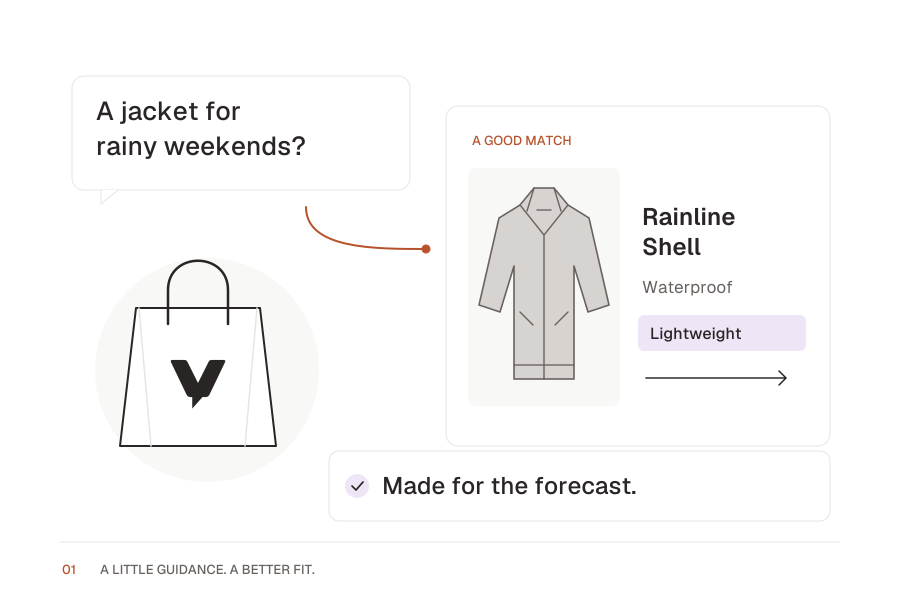

01 Product advice
Find the fit.
Skip the guesswork.
A buying question becomes a considered recommendation. The product takes center stage; the answer brings it into focus.
- Hero or sales feature section
- Question → product → recommendation



Static illustration